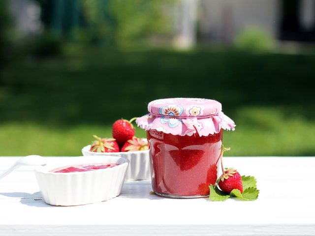
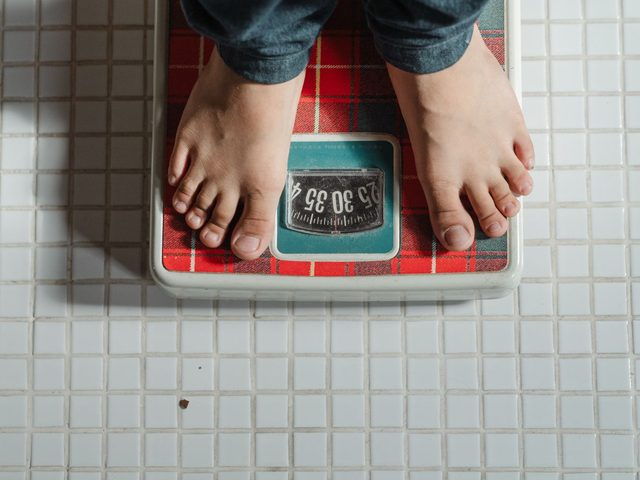
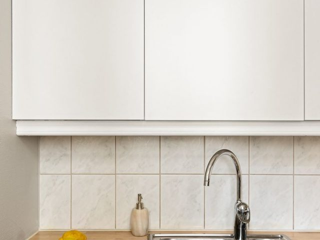
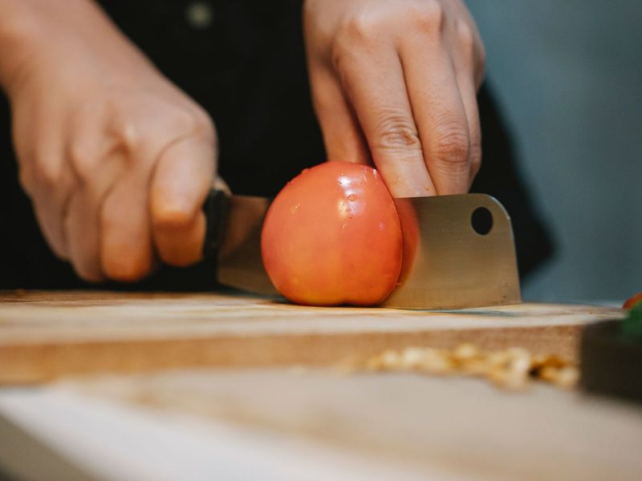

VOCABULARY · WORD UP 單字複習 UNIT 26
J+K．J、K 開頭
WORD UP「J+K」的 49 個字（jacket 到 KTV）。紅色＝要複習，藍色標籤＝WORD UP 標熟記、還要在這裡考對。
共 49 個單字．點 🔊 聽發音
1jacketn.
夾克；外套
Take a jacket with you.帶件外套吧。

2jamn.
果醬；塞車
traffic jam 塞車
I like strawberry jam on bread.我喜歡在麵包上塗草莓醬。
3Januaryn.
一月
January is the first month of the year.一月是一年的第一個月。
4Japann.
日本
We visited Tokyo, Japan.我們去了日本東京。
5Japaneseadj./n.
日本的；日本人；日文
I can speak a little Japanese.我會說一點日文。
6jazzn.
爵士樂
Dad enjoys listening to jazz.爸爸喜歡聽爵士樂。

7jealousadj.
忌妒的
be jealous of
Don't be jealous of others.不要忌妒別人。
8jeansn.
牛仔褲
一定用複數；a pair of jeans
I bought a pair of jeans.我買了一條牛仔褲。
9jeepn.
吉普車
They drove a jeep up the mountain.他們開吉普車上山。

10jobn.
工作
Good job! 做得好
Good job! You did it!做得好！你成功了！

11jogv.
慢跑
go jogging
I go jogging in the park every morning.我每天早上去公園慢跑。
12joinv.
參加；加入
join + 團體／人
Do you want to join us?你要加入我們嗎？
13jointn./adj.
關節；共同的
My knee joint hurts.我的膝關節會痛。

14joken./v.
笑話；開玩笑
tell a joke 講笑話
He told a funny joke.他講了一個好笑的笑話。

15journalistn.
記者
The journalist asked many questions.那位記者問了很多問題。

16joyn.
歡樂；喜悅
The children jumped for joy.孩子們高興得跳起來。

17judgen./v.
法官；裁判；判斷
Don't judge a book by its cover. 不要以貌取人
The judge listened carefully.法官仔細地聽。

18juicen.
果汁
不可數；a glass of juice
Would you like some orange juice?你要喝柳橙汁嗎？
19Julyn.
七月
Summer vacation starts in July.暑假在七月開始。

20jumpv.
跳
The cat jumped onto the table.貓跳到桌上。
21Junen.
六月
We graduate in June.我們六月畢業。

22justadv.
剛剛；只是；正好
I just finished my homework.我剛寫完功課。

23kangaroon.
袋鼠
A kangaroo carries its baby in a pouch.袋鼠把寶寶放在育兒袋裡。
24Kaohsiungn.
高雄
Kaohsiung is a big port city.高雄是個大港市。

25keepv.
保持；保留；持續
三態 keep-kept-kept；keep + V-ing
Keep going! Don't stop.繼續加油！不要停。
26ketchupn.
番茄醬
I put ketchup on my fries.我在薯條上加番茄醬。

27keyn.
鑰匙；關鍵
the key to…
I lost my house key.我弄丟了家裡的鑰匙。

28kickv.
踢
He kicked the ball into the goal.他把球踢進球門。

29kidn./v.
小孩；開玩笑
Just kidding. 開玩笑的
Just kidding!開玩笑的啦！
30killv.
殺死
Smoking can kill you.抽菸會要了你的命。

31kilogramn.
公斤
縮寫 kg
This bag weighs five kilograms.這個袋子重五公斤。

32kilometern.
公里
縮寫 km
The station is two kilometers away.車站在兩公里外。

33kindadj./n.
仁慈的；種類
be kind to + 人；a kind of 一種
It's kind of you to help me.你人真好，願意幫我。

34kindergartenn.
幼稚園
My little brother goes to kindergarten.我弟弟讀幼稚園。

35kingn.
國王
queen 皇后
The king lived in a big castle.國王住在大城堡裡。

36kingdomn.
王國
The United Kingdom is in Europe.英國在歐洲。

37kissv./n.
親吻
Mom kissed me good night.媽媽親我道晚安。

38kitchenn.
廚房
Dad is cooking in the kitchen.爸爸在廚房煮飯。

39kiten.
風箏
fly a kite 放風箏
Let's fly a kite on the beach.我們在海邊放風箏吧。

40kittenn.
小貓
The kitten is playing with a ball.小貓在玩球。
41kneen.
膝蓋
k 不發音
I fell and hurt my knee.我跌倒傷到膝蓋。

42knifen.
刀子
複數 knives；k 不發音
Be careful with the knife.用刀子要小心。

43knockv./n.
敲
knock on the door 敲門
Please knock before you come in.進來前請敲門。
44knowv.
知道；認識
三態 know-knew-known
Do you know her name?你知道她的名字嗎？
45knowledgen.
知識
不可數
Reading gives us knowledge.閱讀帶給我們知識。

46koalan.
無尾熊
Koalas sleep most of the day.無尾熊一天大部分時間都在睡覺。

47Korean.
韓國
Many tourists go to Korea for shopping.很多觀光客去韓國購物。
48Koreanadj./n.
韓國的；韓國人；韓文
I love Korean food.我很愛韓國料理。
49KTVn.
KTV；卡拉 OK
We sang songs at KTV.我們去 KTV 唱歌。
FOCUS
重點整理
| 說法 | 中文 | 例子 |
|---|---|---|
| keep + V-ing | 一直做… | keep talking |
| be kind to + 人 | 對某人好 | Be kind to animals. |
| a kind of | 一種… | a kind of fruit |
| be jealous of | 忌妒… | jealous of her |
| join + 團體 / take part in + 活動 | 加入 ／ 參加 | join the club |
| knee / knife / knock / know | kn 開頭 k 不發音 | knife → knives |
| Just kidding. | 開玩笑的 | Just kidding! |
jeans 一定用複數：My jeans are blue.